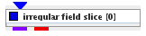
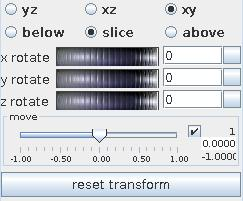

|
|
|

outputs a planar slice of an irregular field by triangulating it and slicing every simplex
| input port | type | description | data acceptors |
|---|---|---|---|
| inField | VNField | Regular Field 3D with explicit coordinates Irregular Field 3-space |
|
| output port | type | description | data schemas |
| outField | VNIrregularField | Field 3-space |
|
| outObj | VNGeometryObject | Output of geometry object for 3D rendered volume |
IRREGULAR FIELD SLICE
The irregular field slice module extracts an arbitrarily-oriented 2D slice of data from a 3D irregular field. Output is generated every time the slice plane moves.
Input data
Requires a regular 3D 3-space field with explicit coordinates or an irregular 3-space field.
Output data
The output field contains a new irregular 2D 3-space field and a 3D geometry object of the output field.
Computation parameters

The first radio button panel allows to choose the orientation of the slice in space as a plane spanned in yz-, xz- or xy-direction, orthogonal to the x-, y- or z-axis.
The second radio button panel allows the user to pick all values below the slice, only the slice, or all values above the slice to map to the output field.
The x rotate, y rotate and z rotate widgets adjust the slice position in the 3D space by scrolling the widget wheels using left mouse button. Right mouse button click on the wheel reduces the sensitivity of the wheel, left mouse button click increases the sensitivity. The slice can be rotated editing the text fields on the right hand side of the wheels, rotation can be reset using the buttons besides the text fields.
The move slider translates the slice parallel to its present orientation. If check box on the right hand side of the slider is on the user is able to change minimum, maximum and current value of the movement editing the text fields on the right hand side.
Transformations can be reset using the reset transform button.
Presentation parameters
Presentation tab contents are described in the common interfaces section unter the Presentation Panel entry.